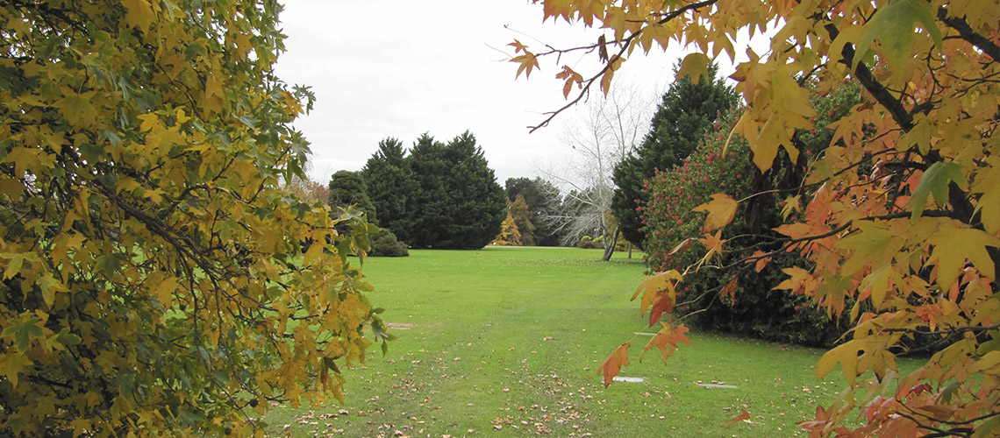
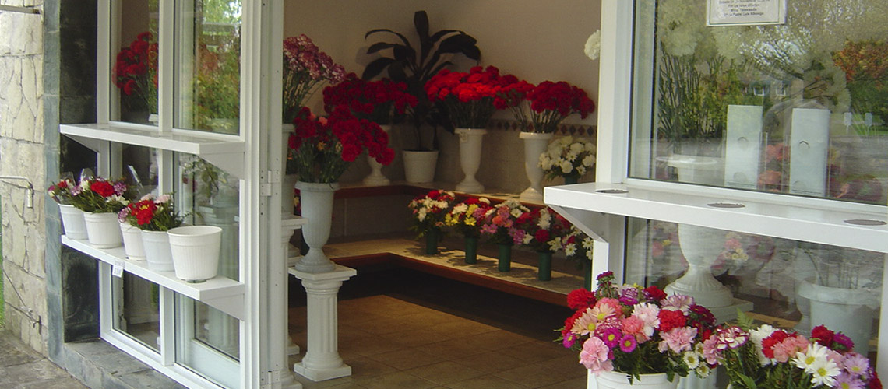

PARCELAS A PERPETUIDAD
Las parcelas son cedidas a perpetuidad otorgando la tranquilidad de haber resuelto una necesidad para siempre.Cada parcela es identificada con una lapida de granito con placas de bronce, de medidas uniformes, colocadas al ras del césped.

FLORERIA
El visitante encontrará a su disposición todos los días del año, instalaciones con flores, arreglos, pudiendo además contar con un servicio de reposición de flores. Su ubicación dentro del Parque, en un lateral del estacionamiento vehicular otorga inmejorables condiciones de comodidad y seguridad a los usuarios.